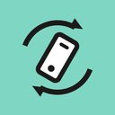

PlainSpin privacy policy
This policy covers the PlainSpin Android app (“PlainSpin”), a screen rotation control app. In short: PlainSpin does not collect, sell or share any data. It has no account, no ads, no analytics and no tracking. The app does not have permission to use the internet.
Information the app handles
- Your rotation settings: the rotation for the whole phone, your per-app rules (the package names of the apps you chose), and the charging and headphones options.
- While rotation control is on: which app is in front right now, whether the phone is charging and whether headphones are connected, so the right rotation can be applied.
Your settings are saved in the app's private storage on your phone. Which app is in front is used in the moment and is not stored or logged. None of this is ever sent to the developer or anyone else.
Permissions
PlainSpin does not use an accessibility service and does not change your phone's system settings. If PlainSpin stops or is uninstalled, your phone simply returns to its own rotation.
Storage and deletion
Removing a rule deletes it. Uninstalling the app removes all its data. Since we never receive your data, there is nothing for us to delete on our side.
What we don't do
- We don't collect personal or sensitive information.
- We don't sell or transfer user data to third parties.
- We don't show ads or use advertising IDs.
- We don't use analytics or crash-reporting services.
Children
The app is not directed at children under 13 and does not knowingly collect information from anyone.
Changes
If this policy changes, the updated version will be posted on this page with a new date.
Contact
Questions or requests: email tmosby137@gmail.com, or open an issue on GitHub (issues are public, so please use email for anything personal).